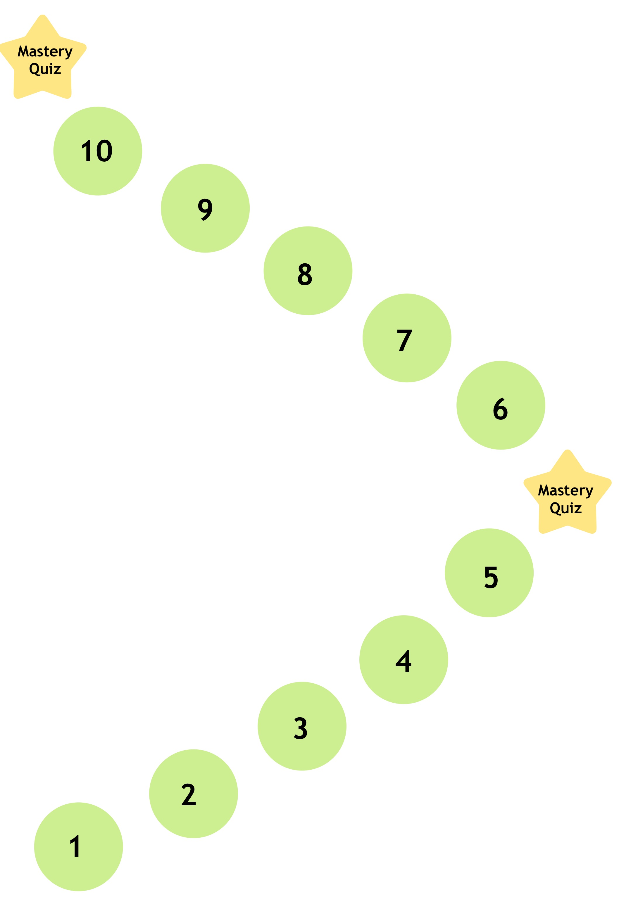
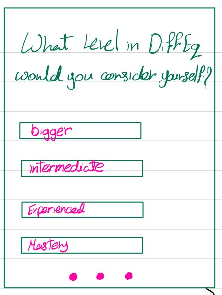
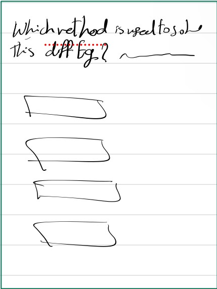

Welcome to Diffdash!

Project Description:
This project is going to be a Duolingo inspired math application to help college students learn differential
equations. Our project is going to be a Duolingo-style application for college-level differential equations.
As a college student, when we took a differential equations class, as much as we enjoyed it, we found it very hard
to find help outside of office hours. Looking for videos online to explain topics or even using ChatGPT to get
answers was not helpful at all; in fact, ChatGPT often provided incorrect answers. For a college student looking
for online help, Diffdash would make learning differential equations much easier and would offer plenty of
practice questions. Our target audience is college students taking this course. The project will be highly
accessible, allowing users to study on their laptops or quickly review material on their phones between classes.
How Does it Work?:
The application will have 10 levels, each covering a different topic in differential equations. An index will
outline what will be covered in each level. To start, the user will be prompted to select which level they
believe they are at in their differential equations journey. For levels that are skipped, mastery exams for
those levels will need to be passed to demonstrate knowledge.
Level one will start with very simple conceptual questions and will gradually introduce basic linear differential
equations, eventually progressing to more complex and diverse types of differential equations. The difficulty
increases from 0 to 10 within each of the 10 levels. Each level presents only one topic, but the questions
within these levels will gradually become harder since each level represents a brand-new topic for the users.
For questions that ask users to respond with equations, a math keyboard will be provided to the user.
Mock Screenshots


